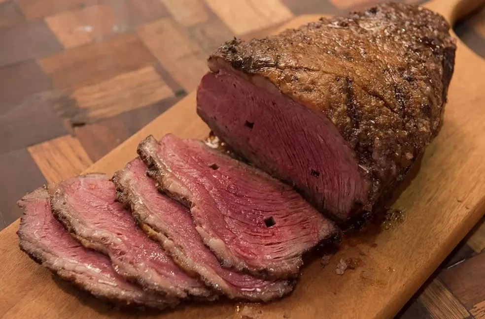

Picanha

The favorite menu entry in a brazilian churrascaria,
best served with tomato vinaigrette.
Ingredients
- 3 cloves of garlic, crushed
- 1 teaspoon of kosher salt
- 1 pound beef top sirloin, trimmed of excess fat
- 1/4 cup lemon juice
- 1 tablespoon olive oil
Steps
- Mix crushed garlic and salt together in a bowl
until combined into a paste.
- Rub garlic paste onto meat until covered.
- Place into a bowl; cover with lemon juice.
- Marinate until the meat has absrobed desired flavor,
30 mintues to 40 hours.
- Remove meat from the lemon juice and baste with olive oil.
- Preheat an outdoor grill for high heat and lightly
oil the grate
- Cook meat on the preheated grill, turning frequently until
the outer edges are charred and the center in uncooked,
it usually takes about 5 minutes.
- Remove from heat; slice off charred edges, cutting
against the grain.
- Return the uncooked center portion of the meat back
to the grill. Cook until the meat begins to firm and
is hot and slightly pink in the center, about 5 minutes
per side. An instant-read thermometer inserted into
the center should read 140°F (60°C)